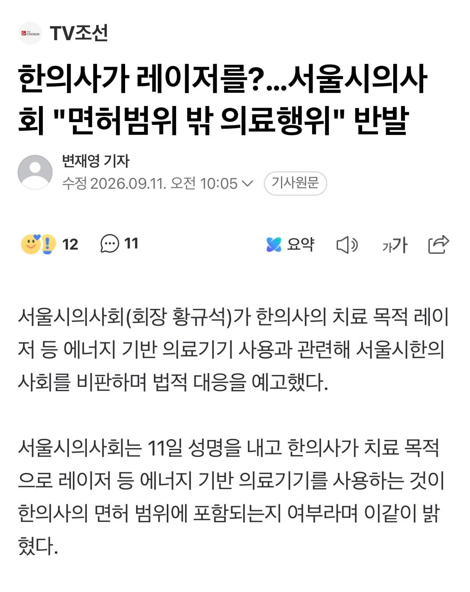
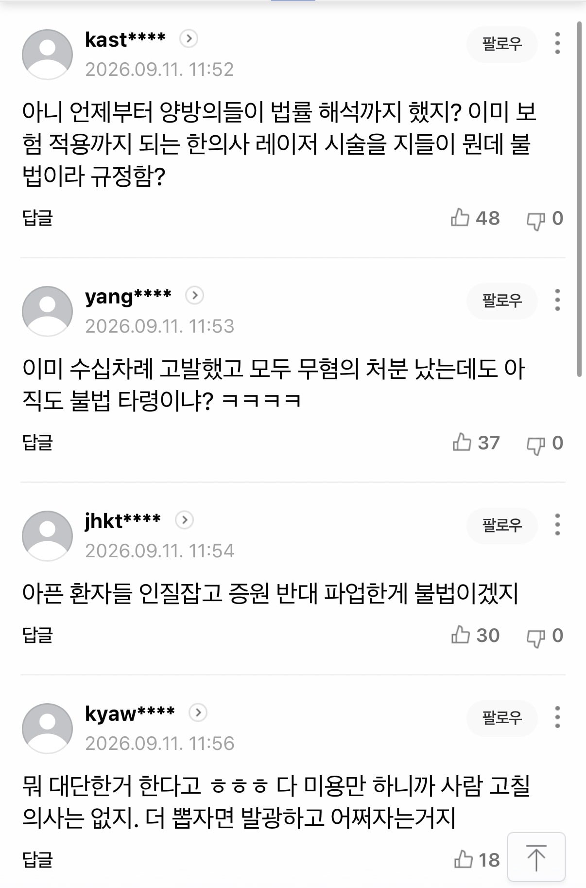

근데 이미 고발한거 전부 무혐의 떠서 졌다고 했는데 남은 법적 대응이 있나?


근데 이미 고발한거 전부 무혐의 떠서 졌다고 했는데 남은 법적 대응이 있나?
한의사가 레이저 잡는 거보다
의사가 지좆대로 법률 해석하는 게 훨씬 월권인건 맞음 ㅋㅋㅋ
의료만 하자. 진짜 존경할께.
한무센세들이 의료 말고 미용좀 하시겠다는데 어디 의새들이 쯧!
씨발 레이저싸개 새끼들 피부과라는 단어좀 못쓰게 해라 개짜증남.. 울나라 이제 외국인들도 많이 들어오는데 피부과라고 찾아서 갔더니 우린 진료는 안봐여ㅎㅎ 지랄떨면 얼마나 병신처럼 보일지
침?놓는대!
그런앱이 있어? 바로 검색해 봐야게따
흉터 치료하고 싶은데